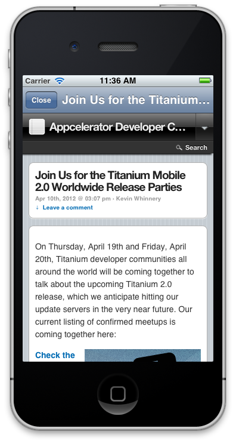
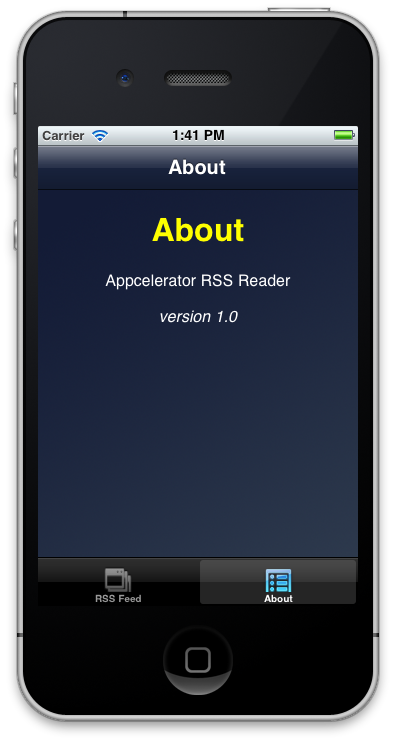
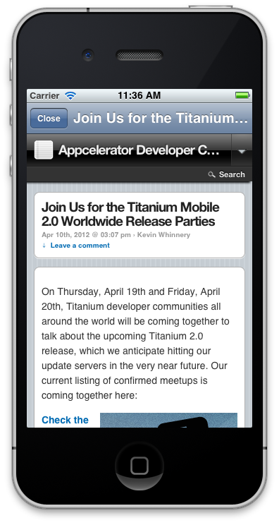
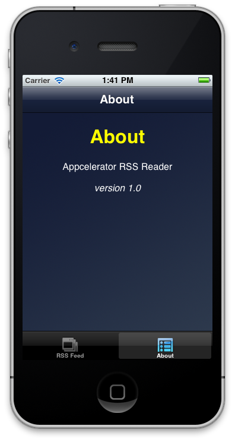

Lab - Integrating Web Content
Mission: In this lab, you will integrate web content into a partially-completed RSS reader. Individual articles will be displayed in a web view within a modal window. A local HTML file will be shown in an 'About' tab.
Specification: You will download a partially-completed file and add the missing functionality. The finished app will look like this: 

| 1. Download the starting file set from GitHub or AWS/S3 and import the resulting files as a new Titanium Mobile project. | |
| 2. Examine the contents of the app.js, ui/TabGroup.js, and lib/network.js files. These files have been completed for you. | |
| We've written most of the UI features and network functions so that you can concentrate on adding the web view functionality. Of course, at this point, the app doesn't do anything. | |
| 3. Open the ui/RSSWindow.js file. In the table event listener, follow the code comments to require in the appropriate module, instantiate the window, and open it. | |
| When users tap on a row, this window will open and display the contents of the blog article. | |
| 4. Open ui/ArticleWindow.js and following the comments in that file, write the code to define the window that will contain the web view for showing the blog articles. | |
| 5. Open ui/AboutWindow.js and following the comments in that file, write the code to define the window that will display the index.html file on the 'About' tab. | |
| 6. Save your changes in all files and build your project for the simulator/emulator. | |
| 7. Test your work by viewing an article or two and by displaying the About tab. | |
| Correct any errors and rebuild the app, if necessary. | |
| 8. Close the simulator/emulator and all open files in Studio. | |
Summary
In this lab, you implemented web views in two different ways. In one, the contents of a blog post are displayed in a web view. In the other, the contents of a local HTML file are displayed within a web view to illustrate how you can display formatted text in that manner.
Resources
- API docs: WebView: http://docs.appcelerator.com/titanium/2.0/index.html#!/api/Titanium.UI.WebView
- Guides: Integrating Web Content: http://docs.appcelerator.com/titanium/2.0/index.html#!/guide/Integrating_Web_Content
- Finished code: GitHub